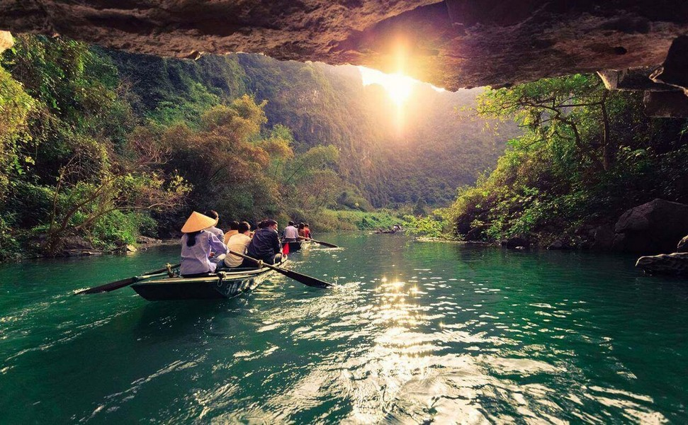
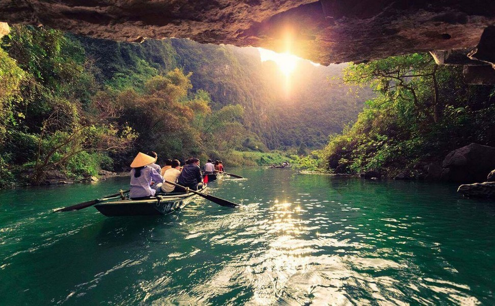

Văn hóa/Lịch sử
Ẩm thực: Được biết đến với những món ăn đặc trưng và ngon miệng như cơm cháy, chim cuốn lá lốt, nem chua, bánh gai, bún riêu cua, chả cá, cái măng, chè đái và măng nước béo ngậy. Ngoài ra, du khách cũng không thể bỏ qua những quán nhậu ven đường, quán cà phê trà chanh nhỏ xinh hay các quán ăn nổi tiếng như nhà hàng Tràng An View, nhà hàng Đông Thủy, nhà hàng Chez Loan… để thưởng thức ẩm thực đặc sản của Ninh Bình và tận hưởng không gian yên bình, thoáng đãng của vùng đất này.
Công trình, kiến trúc: Nổi tiếng với vẻ đẹp thiên nhiên hùng vĩ và với di sản văn hóa lịch sử phổ biến. Trên đất Ninh Bình có nhiều công trình kiến trúc độc đáo và ấn tượng, bao gồm: Dinh Độc Lập Ninh Bình, Chùa Bái Đính, Vườn quốc gia Cúc Phương. Những công trình kiến trúc ở Ninh Bình không chỉ là nơi du lịch hấp dẫn mà còn là những tác phẩm nghệ thuật độc đáo, thể hiện nét văn hóa truyền thống đậm đà của địa phương này.
Văn hóa Rất đặc biệt và phong phú, phản ánh sự đa dạng văn hóa dân tộc của Việt Nam. Văn hóa Ninh Bình bao gồm nhiều di sản văn hóa, kiến trúc truyền thống và lịch sử phong phú. Một trong những điểm nổi bật của văn hóa Ninh Bình là khu di tích lịch sử Tràng An, nơi được UNESCO công nhận là Di sản Văn hóa và Tự nhiên Thế giới. Tràng An là một hệ thống hang động, động, suối, ao nuôi cá và chuỗi núi non đồi lớn nằm cạnh dòng sông Sao Khe. Ngoài ra, tháp Bái Đính, di tích cổ Hoa Lư, chùa Bái Đính... cũng là những địa điểm nổi tiếng và quan trọng trong văn hóa Ninh Bình. Ninh Bình cũng nổi tiếng với văn hóa ẩm thực phong phú, đặc sản nổi tiếng như gỏi cá sặc, bún cá, nem cây, chả cá... Đặc biệt, trong phong tục đón Tết cổ truyền của người dân Ninh Bình, có lễ hội đậu mới, lễ hội Côi ngó sen, rước đèn ông Sao... những nét văn hóa truyền thống đã được bảo tồn từ hàng thế hệ.

 
